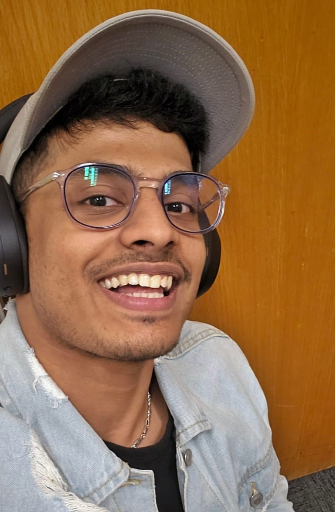

Aswin Raj K
I build systems from RTL and silicon up through firmware and hardware — embedded firmware, digital & ASIC design, FPGA, and PCB engineering.

Background
I'm an engineer working across the full hardware-software stack — embedded firmware, digital & ASIC design, FPGA, and PCB engineering. I'm comfortable going from a Verilog RTL description down to a GDSII tape-out, and back up through RTOS firmware and board bring-up.
Today I'm an Embedded Software Engineer II at Quasistatics, leading firmware across the company's chip portfolio from pre-silicon to post-silicon validation — ARM Cortex bring-up, RTOS drivers, and wireless audio. I like the part of the job where a hardware problem and a software problem meet.
Where I've worked
Embedded Software Engineer II
- Lead firmware across the Quasistatics chip portfolio (QS127/S, QS221–223) from pre-silicon to post-silicon validation — ARM Cortex bring-up, peripheral init and feature development.
- Build firmware on FreeRTOS and Zephyr across Ambiq, Nordic nRF and STM32 SDKs — peripheral drivers, interrupt handling and hardware abstraction layers.
- Own Push-To-Talk firmware end-to-end for WiR demo apps, cutting sidetone latency to 20 ms and resolving 10+ functional and timing bugs.
- Designed a Controlled Bit Error Testing framework for QS127S, lifting baseband validation coverage ~40% and surfacing IC-level encoding/SPI bugs.
Research Scholar
- Engineered a centralized tool-management system monitoring critical status signals for 4 cleanroom tools, improving uptime reporting accuracy by 25%.
- Built a Python telemetry server over Modbus TCP/IP and CAN Bus, plus custom C++ firmware for 4 IoT device types acquiring data at 10 Hz.
- Deployed a remote monitoring GUI in Python, cutting the need for manual equipment checks.
ECE Graduate Assistant
- Developed an IoT device for real-time compressor monitoring in dilution refrigerators, enabling proactive fault detection.
- Designed and verified multi-layer PCBs (256+ pins) for analog IC test, reducing signal interference by 18%.
- Automated data pipelines in Python with multithreading, cutting downtime 20% and recovering 10+ hrs of uptime per week.
Avionics & Software Testing Intern
- Led migration of EZFAP from VBA to G-Suite, cutting daily processing time by 2 hours — a 25%+ productivity gain.
- Executed 100+ avionics test cases for standards compliance, reducing software errors by 15%.
MS, Electrical Engineering
BTech, Electrical Engineering
Projects
Let's build
something.
Always happy to talk firmware, silicon, and hardware. Reach me by email, on LinkedIn, or grab my résumé.